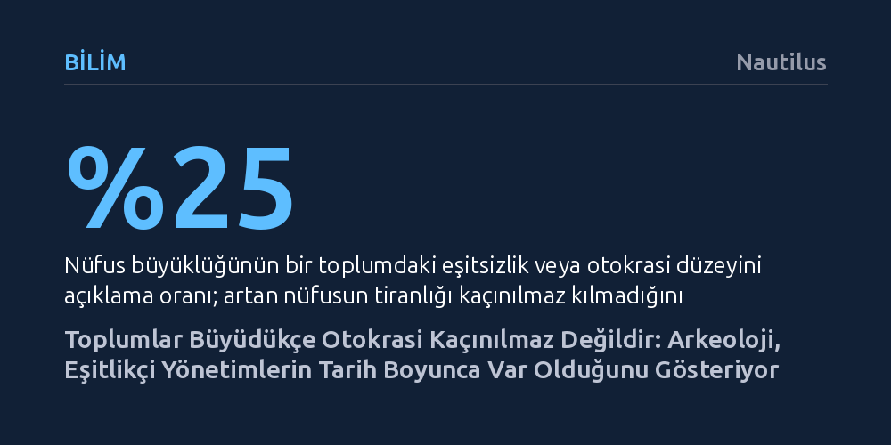

BILIM · Nautilus · 2026-09-07
Bin yılı aşkın arkeolojik veriler, nüfus artışının ve yerleşik hayatın kaçınılmaz olarak otokrasi doğurduğu yönündeki yaygın kabulü çürütüyor. Araştırmalar, gücün tek elde toplanmasını nüfus ölçeğinin değil, yöneticilerin kaynakları halktan mı yoksa tekellerindeki zenginliklerden mi sağladığının belirlediğini ortaya koyuyor.
Demokrasi ve eşitlikçi yönetimin modern Batı'ya veya Aydınlanma'ya özgü bir istisna olmadığını, insanlık tarihi boyunca geniş topluluklarca sürdürülebilir bir tercih olarak uygulandığını kanıtlar.

Geleneksel tarih ve siyaset bilimi anlatısına göre insanlık, avcı-toplayıcı küçük gruplar halindeyken kararları ortaklaşa alıyordu. Ancak tarımın icadıyla birlikte toprağa bağlanma, ürün biriktirme ve mülkiyet kavramı kaçınılmaz olarak eşitsizliğe ve mutlak hükümdarlara yol açtı. Bu yerleşik teze göre, genişleyen toplumların karmaşık işleri yürütmesi için baskıcı ve hiyerarşik bir tek adam yönetimi şarttı; demokrasi ise Antik Yunan ve Roma gibi birkaç istisna dışında, ancak Avrupa Aydınlanması ile yeniden keşfedilebilmişti.
Chicago Field Müzesi'nden arkeolog Gary Feinman ve çalışma arkadaşları, bu yaygın kabulün gerçeği yansıtmadığını ve insanlık tarihinin fazlasıyla basitleştirilmiş bir karikatürü olduğunu savunuyor. Meksika'dan Çin'e uzanan arkeolojik saha çalışmaları, kalabalıklaşan antik kentlerin otomatik olarak tiranlığa teslim olmadığını, tam tersine birçok uygarlığın gücü tabana yayan kapsayıcı ve eşitlikçi mekanizmalar geliştirdiğini kanıtlıyor.
Bu bulgular, Avrupa-merkezci tarih anlayışını da sarsıyor. Despotizmin alternatifi olan kolektif ve katılımcı yönetim pratikleri sadece Atina veya Roma forumlarına özgü değildi; Meksika Vadisi'ndeki Teotihuacan'dan İndus Vadisi'ndeki Mohenjo-daro'ya kadar dünyanın dört bir yanında, modern çağın çok öncesinde başarıyla hayata geçirilmişti.
Araştırmacılar soyut bir kavram olan otokrasi ve eşitliği somut verilere dökmek için devasa bir karşılaştırmalı veri havuzu oluşturdu. PNAS dergisinde yayımlanan ilk çalışmada, binden fazla arkeolojik sit alanındaki en büyük ve en küçük konutların boyutları karşılaştırılarak toplumların servet uçurumları incelendi. Ardından Science Advances'ta yayımlanan ikinci çalışmada, dünya genelindeki 31 bölgeden 40 farklı tarihsel dönem masaya yatırıldı ve yönetim biçimleri 27 nesnel gösterge üzerinden puanlandı.
Bu 27 gösterge arasında kararların kapalı hisarlarda mı yoksa geniş meclis binalarında mı alındığı, devlet sanatının tek bir hükümdarı mı yoksa topluluğu ve doğayı mı yücelttiği, halkın toplanabileceği geniş kamusal meydanların bulunup bulunmadığı gibi mimari ve mekânsal kriterler yer alıyordu. Elde edilen çarpıcı sonuç, yüzyıllık kabulleri sarstı: Nüfus büyüklüğü, bir toplumdaki eşitsizlik veya otokrasi derecesindeki değişkenliğin yalnızca yaklaşık dörtte birini (%25) açıklayabiliyordu. Yani kalabalıklaşmak, gücün tek elde toplanmasını zorunlu kılmıyordu.
Klasik Maya kentleri ile Teotihuacan arasındaki tezat bu gerçeği somutlaştırıyor. Mayalar krallarını tanrılaştırıp devasa saraylar, tek bir liderin sığabileceği dar tapınaklar ve şatafatlı anıt mezarlar inşa ederken; Teotihuacan'da hükümdar mezarına rastlanmadı. Şehrin piramit tepeleri 10-12 kişilik meclislerin toplanabileceği genişlikte yapılmıştı; duvar resimlerinde isimsiz heyetlerin halka tohum ve su dağıttığı, geniş caddelerin ve açık meydanların kolektif bir yaşama hizmet ettiği saptandı.
Peki bazı toplumlar mutlakiyete kayarken diğerleri nasıl kapsayıcı kalabildi? Feinman'ın araştırması, belirleyici faktörün nüfus değil, siyasi kurumların finansman modeli olduğunu gösteriyor. Eğer bir yönetim ayakta kalmak için geniş halk kitlelerinden, küçük çiftçilerden ve zanaatkârlardan vergi toplamak zorundaysa buna "iç kaynak" modeli deniyor. Hareket kabiliyeti yüksek olan insanların baskı karşısında göç etmesini engellemek isteyen yönetim, yurttaşın rızasını almak, güvenliğini sağlamak ve hayatını kolaylaştıracak altyapıyı kurmak zorunda kalıyor.
Buna karşılık hükümdar ihtiyaç duyduğu zenginliği değerli madenler, stratejik ticaret yolları, köle emeği veya feodal mülkler gibi tekelinde tutabildiği "dış kaynaklardan" elde ediyorsa dengeler tümüyle değişiyor. Geniş halk yığınlarının vergisine ihtiyaç duymayan yönetici, sadece bu kaynakları koruyacak küçük bir silahlı muhafız grubunu doyurarak toplumu kolayca hiçe sayabiliyor. Klasik Maya lordlarının yeşim, kakao ve tütsü gibi dış ticaret yollarını tekellerine alması onları otokrata dönüştürürken, Teotihuacan'da üretimin ve ticaretin hane halklarına yayılmış olması merkezi bir iktisadi tahakkümü engelledi.
Bu durum yaygın bir yanılgıyı da düzeltiyor: Otokratlar sanılanın aksine halkı sürekli terörize etmekle uğraşmaz; kaynak açısından onlara muhtaç olmadıkları için çoğunlukla onları görmezden gelirler. Gücün merkezileşmesi, halkın emeğinin yerini hükümdarın doğrudan kontrol edebildiği varlıkların almasıyla hız kazanır.
Modern algıda vergi ödemek çoğunlukla bir yük veya sömürü gibi görülür. Oysa tarihsel veriler, demokratik ve katılımcı düzenlerin sağlıklı bir vergi tabanı sayesinde yeşerdiğini kanıtlıyor. Toplanan vergilerin geniş yollar, su şebekeleri, kamusal toplanma alanları ve ortak savunma olarak halka geri dönmesi, yurttaş ile devlet arasında karşılıklı bir kazan-kazan ilişkisi inşa ediyor. Bu toplumlarda ortak danslar, şenlikler ve törenler de toplumsal güveni pekiştiren bir çimento işlevi görüyor.
Benzer şekilde bürokrasi de yalnızca hantallık veya despotizm aracı değildir; aksine yetkin bir idari mekanizma tek adam keyfiyetini dizginleyen en önemli sigortalardan biridir. Örneğin antik Çin'de Han Hanedanlığı döneminde liyakat sınavlarıyla göreve gelen bürokratlar, kendi bölgelerine duydukları aidiyetle imparatorun mutlak gücüne karşı denge unsuru oluşturabilmişti. Bürokrasi, gücün tek elde toplanmasını engelleyen ve kamu hizmetini kurumsallaştıran demokratik bir araç vazifesi görebilir.
Buna karşın eşitlikçi sistemler doğaları gereği kırılgandır ve sürekli bakım gerektirir. Meksika'daki Monte Albán binyıl boyunca kolektif bir anlayışla yönetildikten sonra, zamanla zenginliğin belirli ellerde toplanması ve makamların babadan oğula geçmesiyle yozlaşarak çöktü. Roma Cumhuriyeti'nden Weimar Almanyası'na dek tarihin gösterdiği gibi, servet yoğunlaşması güç yoğunlaşmasını beslediğinde sistem içeriden çürür. Feinman'ın popüler deyişi hatırlatarak vurguladığı üzere: "Geçmiş kendini aynen tekrar etmez ama kafiyelidir." Eğer tarihin yalnızca despotlardan ibaret olmadığını kavrarsak, bugünün kırılgan demokrasilerini savunmak için geçmişin kolektif tecrübelerinden çok daha güçlü dersler çıkarabiliriz.